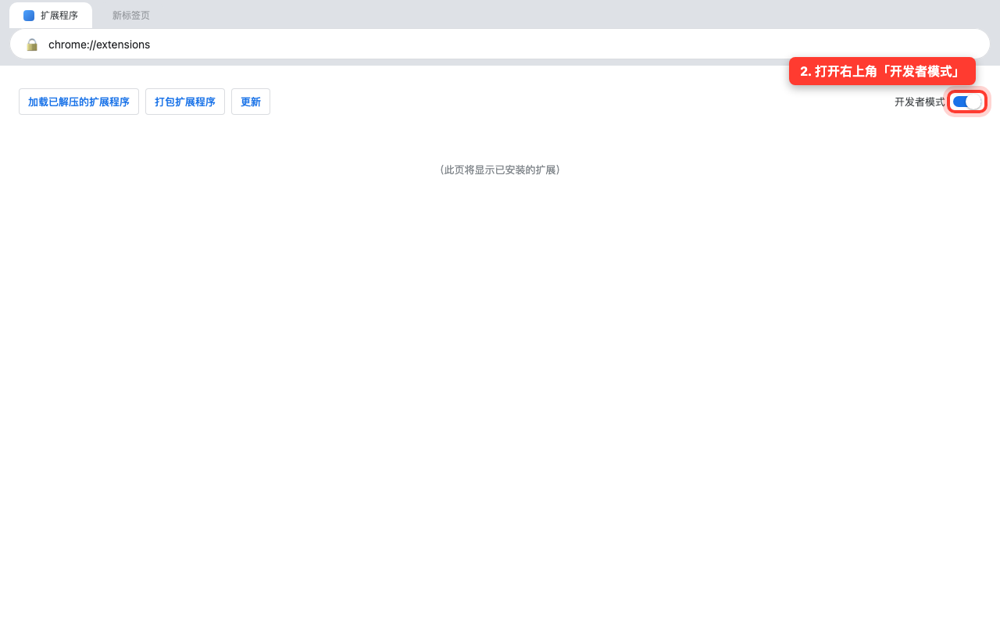
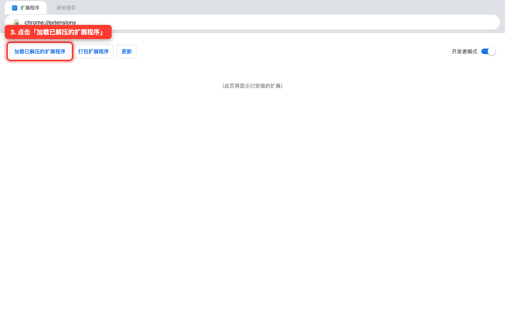
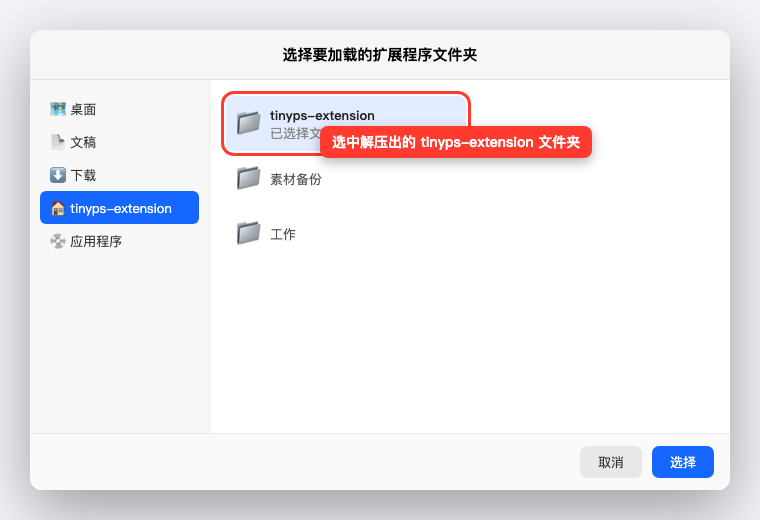
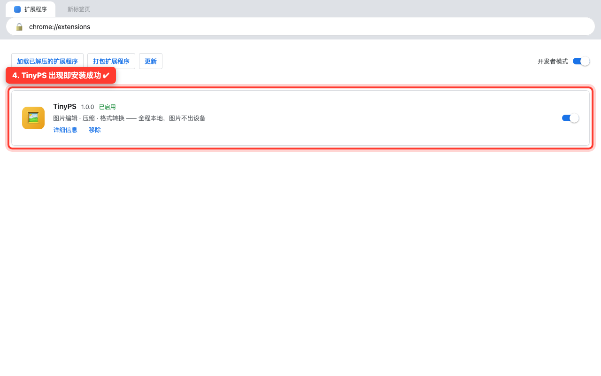

For users who can't reach the Chrome Web Store · about 2 minutes · ← Back to homepage
Click the download link below (a zip of about 8 MB). Once it finishes downloading, double-click the file to unzip it — you'll get a folder named tinyps-extension. Remember where you put it (usually your Downloads folder).
manifest.json file — that's how you know the unzip worked. Don't delete or rename this folder: the extension runs from there.Type chrome://extensions into your Chrome address bar and press Enter. Then switch on Developer mode in the top-right corner:

Click the "Load unpacked" button in the top-left corner:

In the file picker, select the tinyps-extension folder you unzipped in step 1 (the level that contains manifest.json) and click "Select folder":

TinyPS shows up in the extensions list — that means it's installed. Click the puzzle-piece icon 🧩 in your browser toolbar to pin TinyPS, and from then on one click opens the editor. You can also right-click any image on the web and pick "Edit image with TinyPS".

Chrome says "disable developer mode extensions" every time I start it?
This is Chrome's standard warning for every manually-installed extension. Click "Cancel" and ignore it — nothing is broken.
Can I turn Developer mode off afterwards?
No. TinyPS gets disabled if you do, so please leave it on.
How do I update to a new version?
Download the new zip, delete the old folder, unzip the new one, then repeat step 3 in chrome://extensions and pick the new folder (or click "Update" on the card).
Does this work in Edge too?
Yes. Use edge://extensions instead of chrome://extensions — every other step is identical.
How do I uninstall it?
Click "Remove" on the TinyPS card, then delete the unzipped folder.